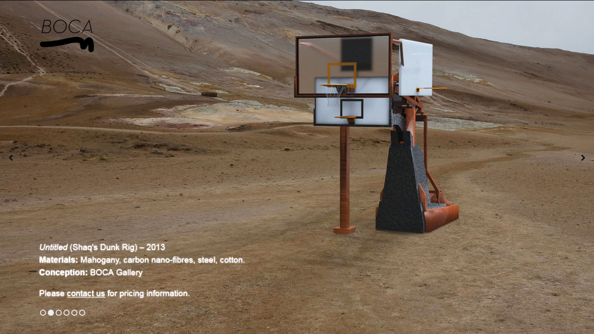
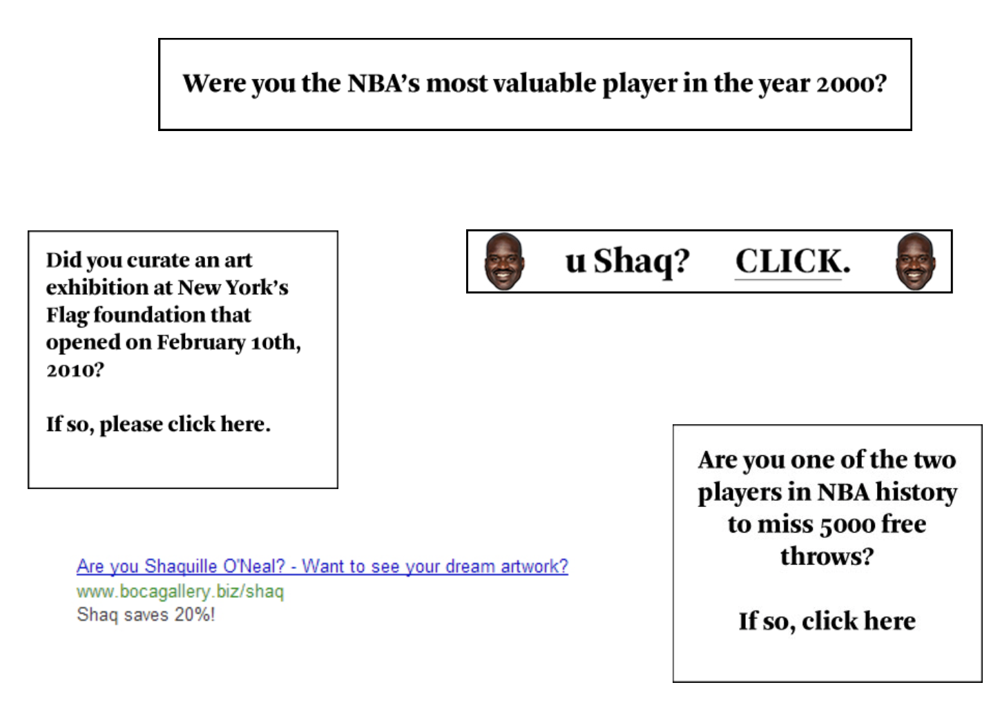
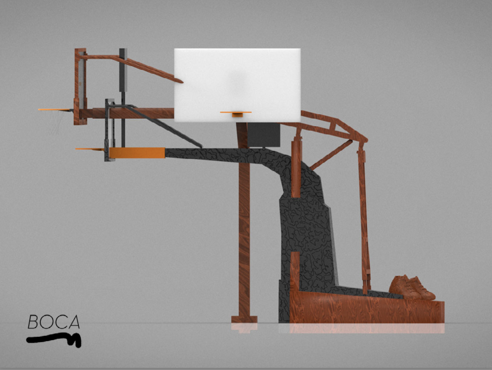
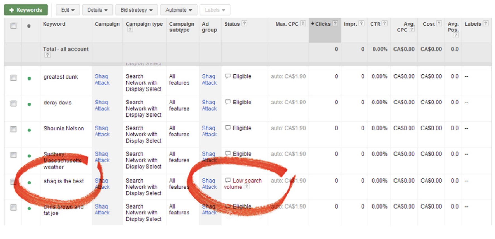
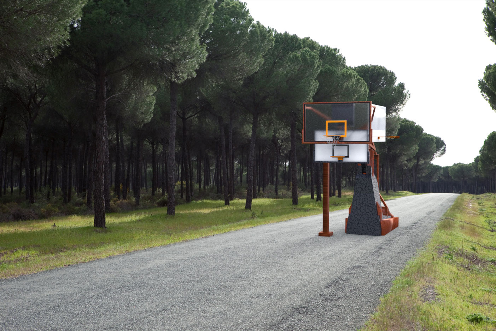

BOCA Gallery Presents: Shaq Attack
DHC/Art, Montréal, 2013
This work was commissioned by DHC/Art and realized in partnership with Julian Garcia.
Shaq Attacked functioned as a “proof of concept,” utilizing a novel method (I would later call critical trolling) for enumerating what colleagues and I would later conceptualize as sociotechnical vulnerabilities. The central conceit was to explore the feasibility of exploiting hidden affordances in AdTech systems, in this case Google AdSense / AdWords. In this instance, subverting the platform away from its prescribed use for demographic marketing purposes in favor of targeting a specific individual (i.e. spearfishing) and creating a secondary spectacle-constituted audience (i.e. journo-baiting).
Materially speaking the project involved:
A. Identifying an art collector (Shaquille O'Neal) whose profile might be thought to generate secondary interest
B. Data-mining that art collector using publicly available interview data
C. Creating a 3d modeled sculpture catered to that collector’s taste, as per the data, presented as a photo-realistic product image using a cutting-edge automobile rendering engine
D. Creating a Google AdSense campaign so focused (both by keywords and geofencing) that it should only appear to the individual in question
E. Presenting the concept in a TED-talk style artwork at a notable art institution
F. Utilizing media publicity as a secondary mechanism to capture the targeted individual’s attention and accrue cultural capital
G. Hope the project might ground critical discussion about an emerging set of sociotechnical arrangements that could be used to less playful ends, since conceptualized by scholars like Shoshana Zuboff as “surveillance capitalism” and Safiya Noble as “algorithmic oppression”
Ultimately, the campaign succeeded in generating a variety of clickbait articles. Shaq never purchased the work, but it attracted interest from some members of the hacking community, and was integral in steering my interests in consequential directions.
Project Images:

Website Landing Page, 2013

Various ad banners, 2013

Clean render of "sculpture", 2013

Google AdSense Dashboard Screenshot, 2013

Render of sculpture in default driving scene, 2013
Name Last modified Size Description
Parent Directory 28-May-2025 12:17 -
Early Work (2006-2009) 28-May-2025 14:30 963k artworks